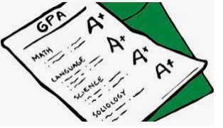
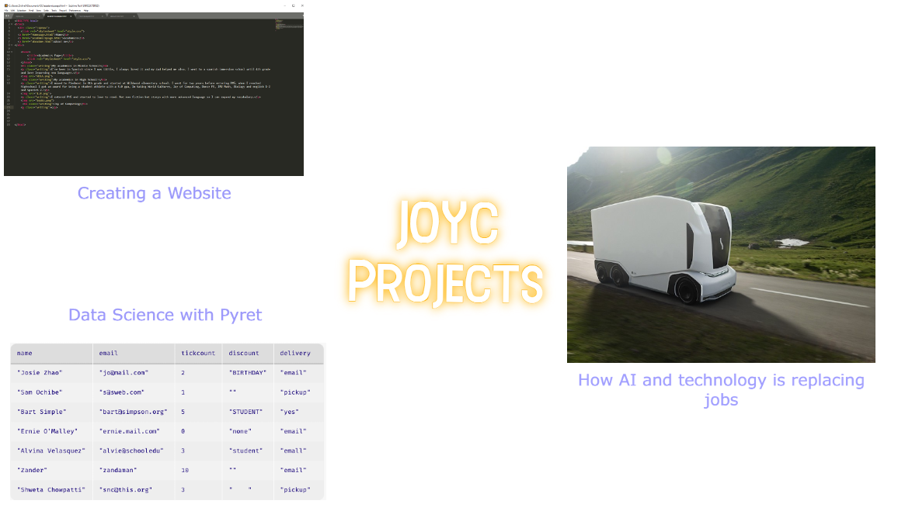

I've been in Spanish since I was Little, I always loved it and my dad helped me also. I went to a spanish immersion school until 4th grade and love leaarning new languages.
I moved to Piedmont in 4th grade and started at Wildwood elementary school. I went for two years before entering PMS. when I reached Highschool I got an award for being a student athlete with a 4.0 gpa, Im taking World Cultures, Joy of Computing, Dance PE, IM2 Math, Biology and english 1-2 and Spanish 2.
I entered PHS and started to love to read. Not non fiction but storys with more advanced language so I can expand my vocabulary.
The first project which has stood out to me is writing about how AI has begun to replace jobs in our regular economy. Truckers have started to be replaced by AI drivers and store cashiers are being replaced by AI security and payment systems. Some people may argue these jobs are good and more efficient/effective when done by AI but many people are also losing jobs which could hurt families. The next project is Data science with pyret. We took basic math principles and made them easy to examine, Pyret allowed us to make charts and graphs to find things like averages and comparisons. Lastly, creating the HTML/CSS website has stood out to me because of how hands on it has been. We did not use a template and coded the website ourselves. I learned how to create style tags and basic text and heading tags. As well as a navigation bar to be able to change pages within one website. The experience has als shown me how complicated more advanced websites would be.
